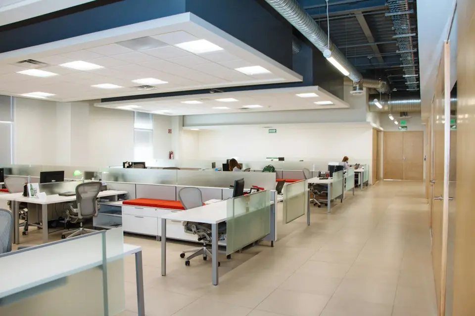

Würzburg und Umgebung
Büroreinigung in Würzburg
Saubere Arbeitsplätze, eine aufgeräumte Küche und ein gepflegter Empfang. Wir reinigen Ihr Büro regelmäßig und zu Zeiten, die zu Ihrem Betrieb passen.
Ein sauberes Büro, ohne dass Sie daran denken müssen
In einem Büro fällt Schmutz selten auf einen Schlag an. Kaffeeringe auf dem Besprechungstisch, Krümel unter den Schreibtischen, Fingerabdrücke an der Glastür: Es sind die vielen Kleinigkeiten, die über die Woche den Eindruck verändern. Eine regelmäßige Büroreinigung fängt das auf, bevor es jemandem auffällt.
Zusammen mit Ihnen legen wir fest, welche Räume wie oft gereinigt werden. Die Küche braucht vielleicht jeden Tag Aufmerksamkeit, das Archiv nur alle zwei Wochen. So bezahlen Sie für das, was wirklich nötig ist, und Ihr Team arbeitet jeden Tag in einer gepflegten Umgebung.
Ein sauberes Büro ist dabei mehr als eine Frage der Optik. Wer morgens an einen aufgeräumten Platz kommt, fängt entspannter an. Kunden und Bewerber nehmen wahr, wie Sie mit Ihren Räumen umgehen. Und gepflegte Böden, Möbel und Geräte halten schlicht länger.

Das gehört zur Büroreinigung
Welche dieser Aufgaben bei jedem Termin anfallen und welche seltener, steht im Leistungsverzeichnis. Das passen wir an, wenn sich Ihr Bedarf ändert, zum Beispiel weil das Team wächst oder ein Raum anders genutzt wird.
- Arbeitsplätze, Schreibtische und Kontaktflächen
- Böden saugen und feucht wischen
- Küchen, Teeküchen und Pausenräume
- Sanitärräume und Waschbecken
- Papierkörbe leeren
- Besprechungsräume und Empfang
So arbeiten wir in Ihrem Büro
Zu passenden Zeiten
Wir stimmen die Reinigungszeiten mit Ihnen ab, damit Telefonate, Termine und konzentriertes Arbeiten ungestört bleiben.
Mit Rücksicht auf Unterlagen
Ordner, Akten und persönliche Dinge auf den Schreibtischen bleiben, wo sie sind. Gereinigt werden die freien Flächen.
Mit klarem Leistungsverzeichnis
Sie sehen schwarz auf weiß, was bei jedem Termin passiert. Ändert sich Ihr Bedarf, passen wir das Verzeichnis an.
Worauf es bei der Büroreinigung ankommt
Bevor Sie eine Büroreinigung beauftragen, lohnt sich ein ehrlicher Blick auf den Alltag in Ihren Räumen. Wie viele Menschen arbeiten dort, und wie viele Besucher kommen am Tag? Gibt es eine Küche, die mittags stark genutzt wird? Welche Böden liegen in den Räumen, Teppich, Vinyl oder Fliesen? Diese Fragen bestimmen, wie oft gereinigt werden sollte und wie lange ein Termin dauert.
Hilfreich ist auch eine kurze Liste mit Punkten, die Sie bisher gestört haben. Vielleicht wurden die Spülmaschine nie ausgeräumt oder die Heizkörper nie abgewischt. Solche Wünsche gehören von Anfang an ins Leistungsverzeichnis. Dann ist klar, was erwartet wird, und Sie müssen später nicht nachfragen.
Denken Sie außerdem an den Zugang. Soll vor Arbeitsbeginn gereinigt werden, nach Feierabend oder während des Betriebs? Gibt es eine Alarmanlage, und wer bekommt einen Schlüssel? Je früher diese Fragen geklärt sind, desto reibungsloser startet die Zusammenarbeit.
Fragen zur Büroreinigung
Ihre Frage zur Büroreinigung ist nicht dabei? Dann rufen Sie an oder lesen Sie die häufigen Fragen zur Gebäudereinigung.
Weitere Leistungen
Wie oft sollte ein Büro gereinigt werden?
Das hängt von der Zahl der Mitarbeitenden, dem Kundenverkehr und der Art der Räume ab. Küchen und Sanitärräume brauchen meist häufiger Aufmerksamkeit als Büroflächen. Wir empfehlen Ihnen einen Rhythmus, der zu Nutzung und Größe passt.
Kann auch außerhalb der Arbeitszeiten gereinigt werden?
Ja, die Reinigung kann vor Arbeitsbeginn oder nach Feierabend stattfinden. Wie der Zugang dann geregelt wird, besprechen wir vorab und halten es schriftlich fest.
Reinigen Sie auch kleine Büros?
Ja. Auch eine Kanzlei mit wenigen Räumen oder ein kleines Agenturbüro kann eine regelmäßige Reinigung brauchen. Wichtig ist, dass Umfang und Preis zueinander passen.